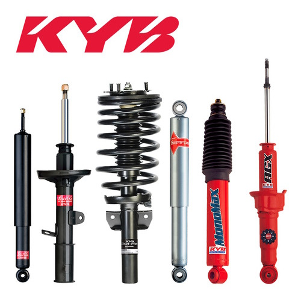
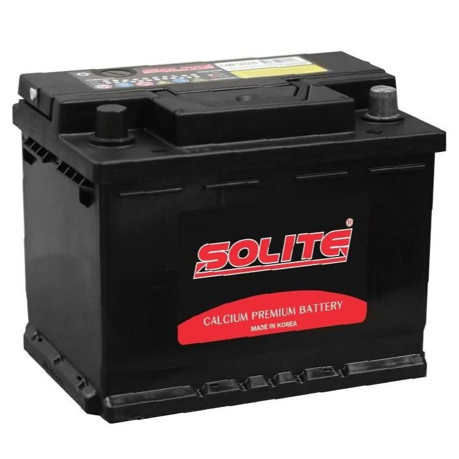
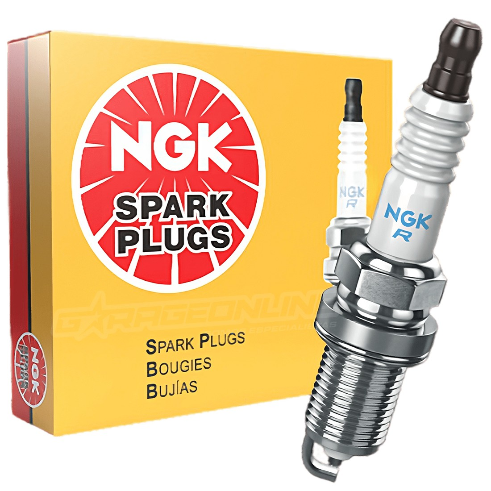

Bienvenid@
NUESTROS PRODUCTOS

AMORTIGUADORES
El amortiguador es una pieza de un vehículo que ayuda a suavizar los golpes y las sacudidas mientras conduces. Su función principal es controlar el movimiento de los resortes del coche, asegurándose de que las ruedas se mantengan en contacto con el suelo. Esto permite que el vehículo tenga un manejo más suave, mejora la estabilidad y reduce el impacto de las irregularidades en la carretera, como baches y bultos. Consigue los tuyos con nosotros

BATERIAS
Una batería es como una "caja de energía" que permite arrancar el coche y hacer funcionar los sistemas eléctricos. La partida en frío es importante porque asegura que la batería pueda entregar suficiente energía para arrancar el coche, incluso en días muy fríos, cuando las baterías suelen tener dificultades para funcionar. Tener una buena partida en frío significa que tu coche arrancará sin problemas, sin importar el clima.

BUJIAS
Una bujía es una pieza del motor de un vehículo que genera la chispa para encender la mezcla de aire y combustible. Se debe cambiar generalmente cada 30,000 a 50,000 kilómetros, dependiendo de tu vehiculo.